Blender · three.js · astronomy · 2026-10
How Tilted Can an Orbit Be Before the Shadow Disappears?
An exoplanet lab on synthetic worlds with the science kept separate and tested: a Jupiter-size planet on a 5-day orbit gives an 11,734 ppm, 3.4-hour transit at 89.9 degrees and no transit at 84, because the impact parameter (1.29) passes 1 plus the radius ratio (1.10). Eight systems, 26 planets, six scripted Blender planet bases, and an intro in which a planet's atmosphere becomes the navigation.
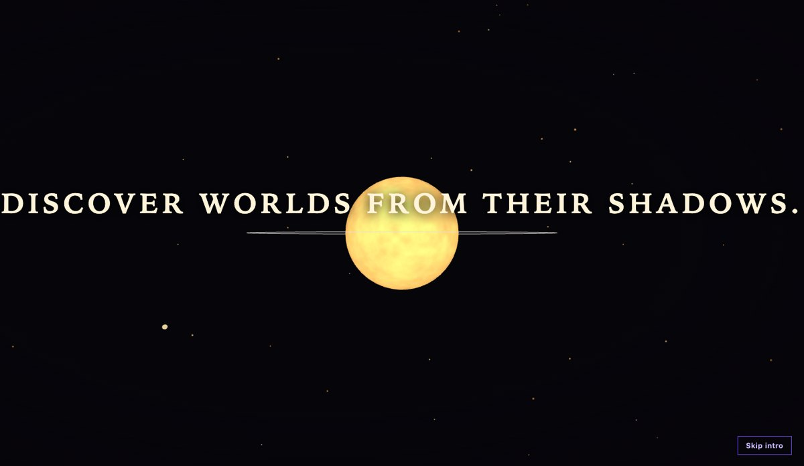
Built from blueprint 05 of a written build book (Advanced Engineering Build Book, Volume VII) as one vertical slice. Every star, planet, atmosphere and discovery is synthetic. The formulas are standard textbook relations (Kepler's third law, equilibrium temperature, a simple habitable zone, a limb-darkened circular-orbit transit, scale-height spectra); no object is real and no accuracy for any real planet is claimed. The planet in the intro moves on a stylised orbit with exaggerated dimming; its readouts (11.6 days, 1.9 Earth radii) are its catalog values. Not built: PostgreSQL, adapters for public catalogs, real spectra, eccentric orbits, touch testing, tablet and large-desktop checks, and a measurement on a physical GPU. The twelve agent roles are committed as Claude Code configuration, but this repository was produced by one session playing them in sequence, not by parallel subagents.
01 — The problem
Transit and spectrum plots are usually shown as finished pictures. The interesting thing is what happens when you move a number: tilt the orbit and the dip vanishes, add noise and the water line sinks into it, slide the planet outward and the same star lights it very differently. Can all of that be one instrument, with the 3D system, the light curve and the star's brightness driven by the same clock and the same functions?
The book's rule for this volume adds a second constraint: Blender provides the planet bases and keeps atmosphere shells separate, and the browser owns the clouds, scattering and temperature effects. So the engineering question is how much a base mesh and a validator have to promise for a shader to do the rest.
02 — What I built
One repository with the science, the asset pipeline and the lab.
- A science module with no knowledge of the scene: Kepler's law, equilibrium temperature, the habitable zone, an Earth similarity index, a transit model, scale heights and transmission spectra, and a molecule detector.
- Six scripted planet bases (rocky, ocean, gas giant with a ring, lava, ice, super-Earth), each on a tilted pivot with its own atmosphere shell, 59,328 triangles in 891 KB, validated by re-import.
- Shaders for continents and clouds, bands, lava cracks, frost, atmospheric scattering and star granulation, driven by planet kind and equilibrium temperature.
- Five instruments: the atlas (a camera journey to each system), the transit lab, the spectrum explorer, the habitability comparison and the discovery timeline.
- An API that runs the same simulations behind the book's contract.
03 — How it was built
- 01
A transit model that can be checked
The planet and star are overlapping disks, weighted by linear limb darkening at the planet's centre. Four tests anchor it: depth is about the radius ratio squared at the centre (an Earth around the Sun gives 84 ppm), the duration matches an Earth transit's 13 hours and a numerical light curve to within 3 percent, the curve is symmetric about mid-transit, and a tilted orbit has no transit at all and says why.
b = (a / Rs) * cos(i); // impact parameter transits = b < 1 + k; // misses the disk when b >= 1 + k - 02
The tilt that removes the shadow
A Jupiter-size planet (11 Earth radii) on a 5-day orbit around a Sun-like star has an impact parameter of 0.17 at 89.9 degrees: an 11,734 ppm dip lasting 3.42 hours. At 84 degrees the impact parameter is 1.29, above 1 + 0.10, so the planet passes clear of the disk; the lab shows no dip and writes the reason out. The same words appear in the API's reply.
- 03
One clock for four views
A single orbital angle drives the planet's place in 3D, the cursor on the light curve, the planet's position in front of the star disk in the observer inset, and the scene star's brightness. A test sweeps the phase slider, finds mid-transit from the inset, and checks that the star in the scene is dimmer there and back to full brightness half an orbit later.
- 04
Spectra that argue back
A gas giant at 350 K shows water (9.6 sigma), methane (7.3) and sodium (4.3) at 25 ppm noise; at 60 ppm only water and methane survive; at 100 ppm none do. A first detector reported carbon dioxide on the gas giant because its 2.7 micrometre band sits on water's. The fix judges each molecule by its strongest band inside the observed range, and a test pins the case.
- 05
A shell that must stay outside the mountains
The validator checks that every atmosphere shell is outside its planet's highest terrain. The first build failed it on the lava world, whose 5 percent bumps poked through a 2 percent shell, so the contract now derives each shell factor from the bump and the validator checks the arithmetic as well as the geometry. The ocean world, which grows to fill the screen in the intro, got the densest mesh because the lower one showed polygon edges at that size.
- 06
A hand-off through the atmosphere
At 15.6 seconds the planet expands toward the camera, its shell brightens until it fills the frame in the atmosphere's blue, and the navigation grows from that colour through a circular mask while the camera pulls back to the system with the same planet selected. A bug in this hand-off was found by a flaky first test: the intro's closing step reset the opened system to NEB-017 even if the visitor had already chosen another. It now leaves the state alone once the navigation is live.
04 — Results
The intro: the dip builds into a curve and readouts, the spectrum is spread into lines, and the planet's atmosphere fills the frame.
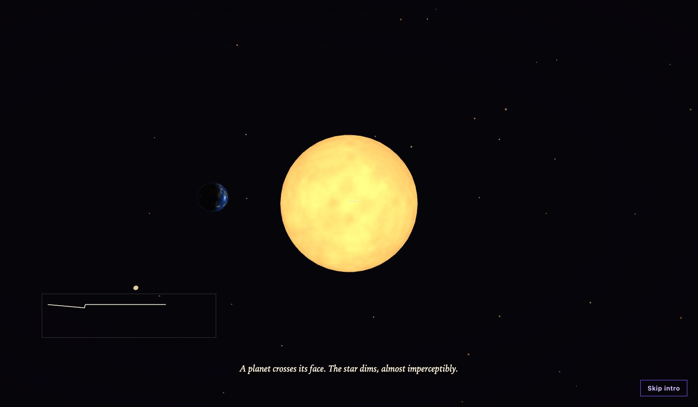
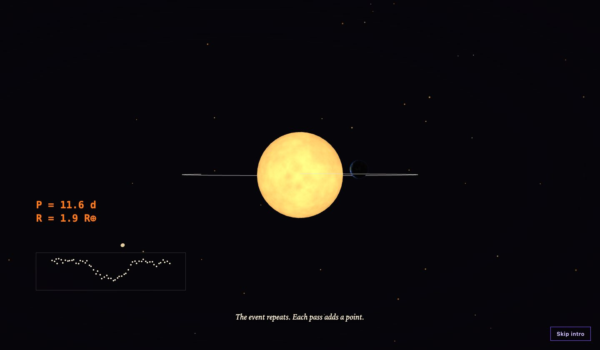
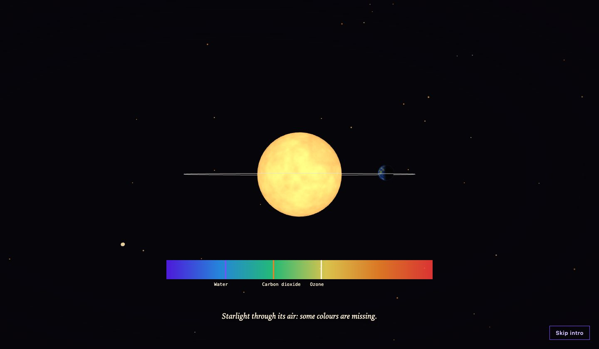
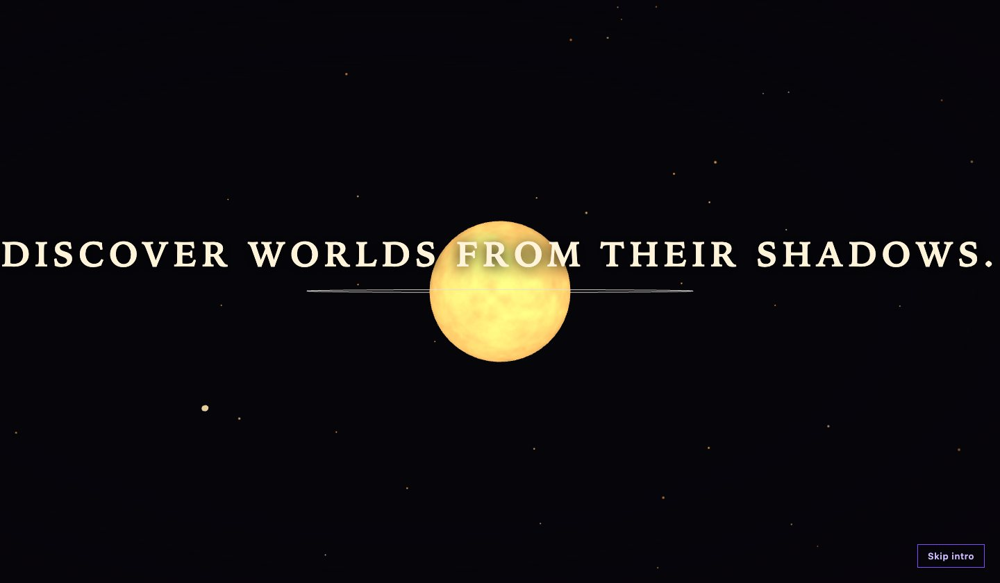
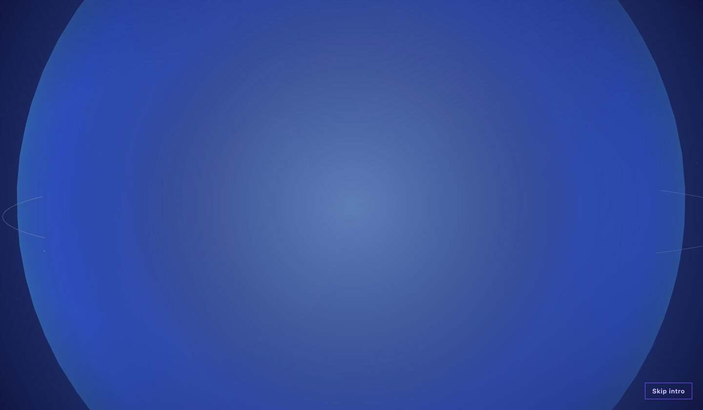
The instruments:
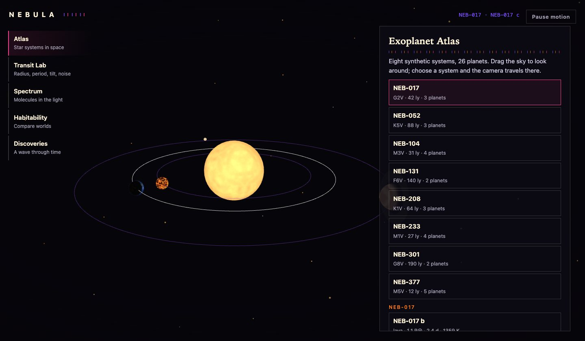
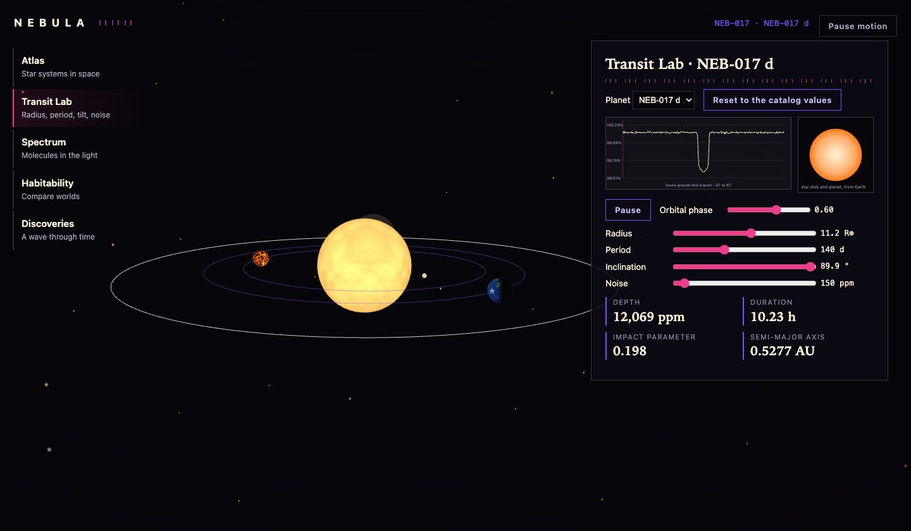
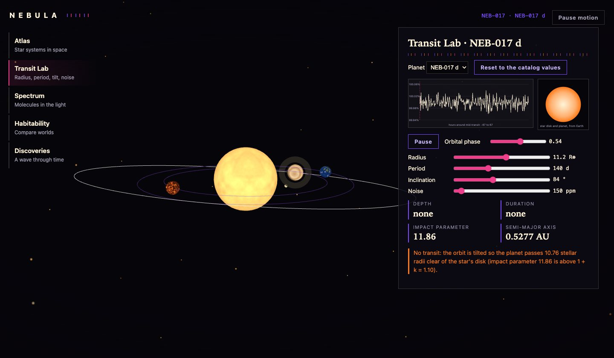
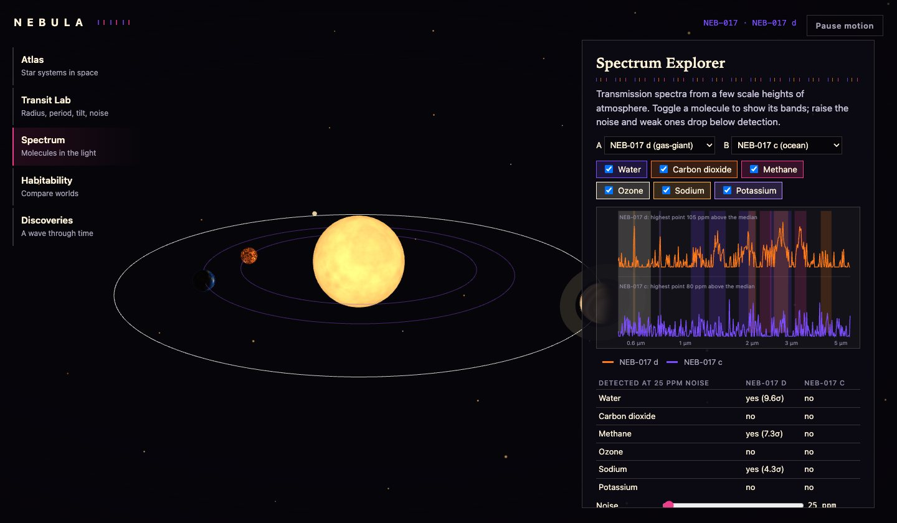
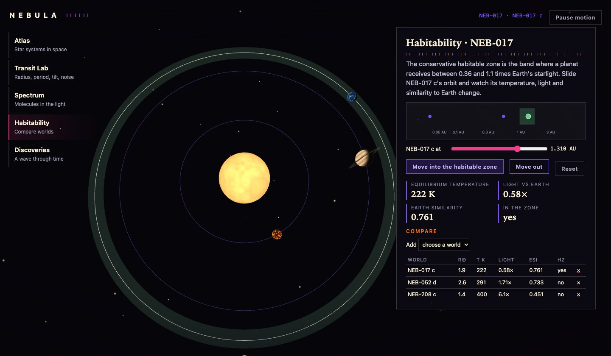
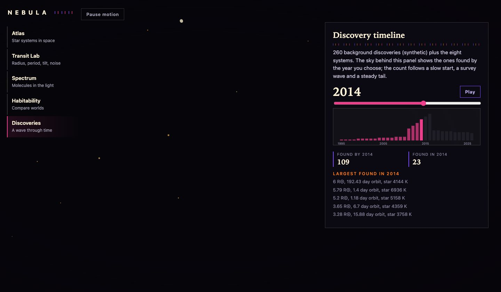
The numbers. NEB-017 c, the ocean world from the intro (1.9 Earth radii, 11.6 days, 0.1003 AU), has an equilibrium temperature of 804 K, receives 99 times Earth's light and scores 0.096 on the Earth similarity index; a 349 ppm, 4.1-hour transit. Moved to 1.31 AU, the middle of its star's habitable zone, it cools to 222 K and scores 0.761. Three of the 26 planets are already in their stars' habitable zones (NEB-104 e, 0.943; NEB-377 f, 0.963; NEB-208 d, 0.513). The background catalog's discoveries per year rise from 1 in 1995 to 13 in 2011 and 29 in 2016 and settle near 10.
Checks. 30 unit and API tests (99% statement coverage of the domain package), 21 Playwright tests that passed twice in a row after the last fix, a clean typecheck. They cover the demo script, cross-view agreement, the habitability slider's monotonicity, reduced motion, graphics failure, context loss, a phone width and five visual-regression states.
Performance, measured on an Apple M3 Pro with software WebGL, not a GPU. 15 draw calls and 40,232 triangles in the transit view, 569 KB of gzipped JavaScript, an 891 KB model. Software rendering gave a 4.9 s largest contentful paint and a median 16.8 ms frame (p95 33 ms); there is no 60 fps claim here.
05 — What I'd do next
- Run the performance script on a physical GPU and a phone; drop to three noise octaves and lower mesh density for planets that are never the camera's target.
- Replace the synthetic catalog with an adapter for a public one, keeping the formulas module unchanged and its tests.
- Add eccentric orbits and a per-star limb-darkening coefficient, with a test against a published light curve.
- Give the detector a retrieval step so overlapping bands are separated by fitting rather than by choosing a strongest band.